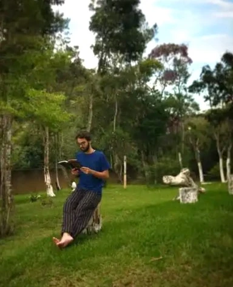

O Vértice Mental

O Vértice Mental nasce da ideia de que todo pensamento relevante não surge do nada, ele é resultado do encontro entre diferentes ideias.
Assim como na geometria, onde um vértice é formado pelo encontro de arestas, aqui cada reflexão representa um ponto de convergência entre referências, experiências, conhecimentos e questionamentos.
Este projeto é um espaço para explorar esses encontros.
Um lugar onde filosofia, ciência, tecnologia, arte, espiritualidade e cultura se conectam — não como áreas isoladas, mas como partes de uma mesma rede de pensamento.
O objetivo não é apresentar verdades absolutas, mas provocar conexões.
Cada texto, cada insight e cada análise são tentativas de formar novos vértices mentais, pontos onde ideias se cruzam e expandem a forma como enxergamos o mundo.
Se você também acredita que pensar é conectar, você está no lugar certo.
Autor: Gabriel Gonçalves